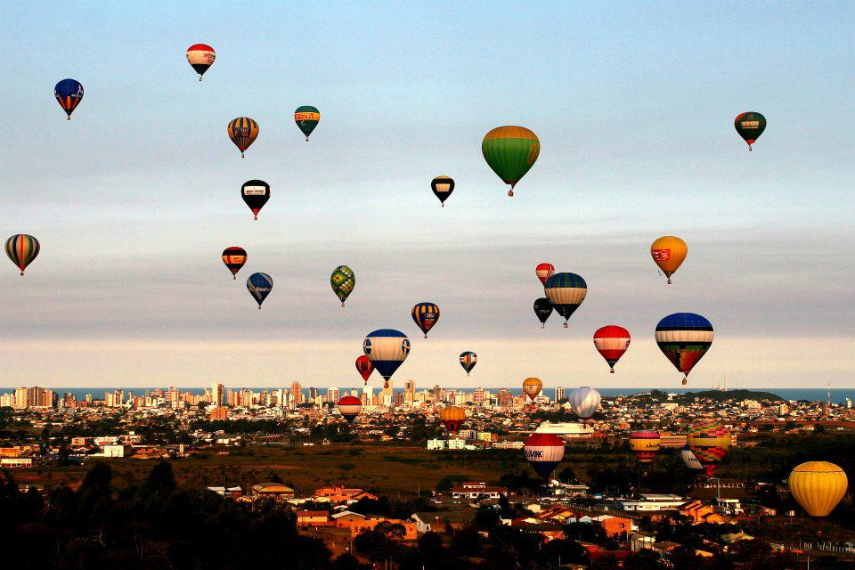
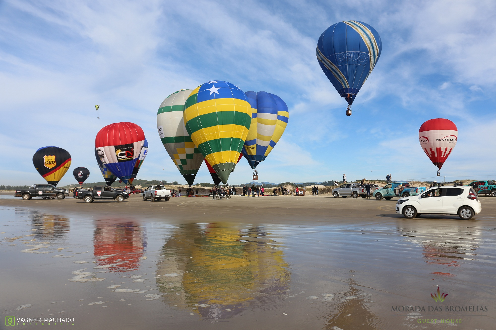

Sobre o Balonismo
O balonismo é um esporte e lazer que permite observar paisagens incríveis de um ponto de vista único. Experimente a liberdade de voar!
Passeios de Balão
Oferecemos passeios ao nascer e pôr do sol, conduzidos por pilotos experientes e certificados.
Galeria
Veja algumas fotos das nossas aventuras nas alturas.

